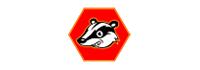
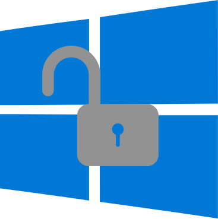

You are being watched. Private and state-sponsored organizations are monitoring and recording your online activities. privacytools.io provides knowledge and tools to protect your privacy against global mass surveillance.
Over the last 16 months, as I've debated this issue around the world, every single time somebody has said to me, "I don't really worry about invasions of privacy because I don't have anything to hide." I always say the same thing to them. I get out a
pen, I write down my email address. I say, "Here's my email address. What I want you to do when you get home is email me the passwords to all of your email accounts, not just the nice, respectable work one in your name, but all of them, because I
want to be able to just troll through what it is you're doing online, read what I want to read and publish whatever I find interesting. After all, if you're not a bad person, if you're doing nothing wrong, you should have nothing to hide." Not a single person has taken me up on that offer.
The UKUSA Agreement is an agreement between the United Kingdom, United States, Australia, Canada, and New Zealand to cooperatively collect, analyze, and share intelligence. Members of this group, known as the Five Eyes,
focus on gathering and analyzing intelligence from different parts of the world. While Five Eyes countries have agreed to not spy on each other as adversaries, leaks by Snowden have revealed that some Five Eyes members monitor each other's citizens and share intelligence to avoid breaking domestic laws that prohibit them from spying on their own citizens. The Five Eyes alliance also cooperates with groups of third-party countries to share intelligence (forming the Nine Eyes and Fourteen Eyes), however Five Eyes and third-party countries can and do
spy on each other.
{% include panel.html color="danger"
title="Five Eyes"
body='
Australia
Canada
New Zealand
United Kingdom
United States of America
'
%}
{% include panel.html color="warning"
title="Nine Eyes"
body='
Denmark
France
Netherlands
Norway
'
%}
{% include panel.html color="secondary"
title="Fourteen Eyes"
body='
Belgium
Germany
Italy
Spain
Sweden
'
%}
Key Disclosure Law
Who is required to hand over the encryption keys to authorities?
Mandatory key disclosure laws require individuals to turn over encryption keys to law enforcement conducting a criminal investigation. How these laws are implemented (who may be legally compelled to assist) vary from nation to nation, but a warrant
is generally required. Defenses against key disclosure laws include steganography and encrypting data in a way that provides plausible deniability.
Steganography involves hiding sensitive information (which may be encrypted) inside of ordinary data (for example, encrypting an image file and then hiding it in an audio file). With plausible deniability, data is encrypted in a way that prevents an
adversary from being able to prove that the information they are after exists (for example, one password may decrypt benign data and another password, used on the same file, could decrypt sensitive data).
{% include panel.html color="danger"
title="Key disclosure laws apply"
body='
* (people who know how to access a system may be ordered to share their knowledge, however, this doesn't apply to the suspect itself or family members.)
Why is it not recommended to choose a US-based service?
Services based in the United States are not recommended because of the country's surveillance programs, use of National Security Letters (NSLs) and accompanying gag orders, which
forbid the recipient from talking about the request. This combination allows the government to secretly force companies to grant complete access to customer data and
transform the service into a tool of mass surveillance.
An example of this is Lavabit – a discontinued secure email service created by Ladar Levison. The FBI requested Snowden's records after finding out that he used the service. Since Lavabit did not keep logs and email content was stored encrypted, the FBI served a subpoena (with a gag order) for the service's SSL keys. Having the SSL keys would allow them to access
communications (both metadata and unencrypted content) in real time for all of Lavabit's customers, not just Snowden's.
Ultimately, Levison turned over the SSL keys and shut down the service at the same time. The US government then threatened Levison with arrest,
saying that shutting down the service was a violation of the court order.
Note: Using a VPN provider will not make you anonymous. But it will give you a better privacy. A VPN is not a tool for illegal activities. Don't rely on a "no log" policy.
Our VPN Provider Criteria
Operating outside the USA or other Five Eyes countries.
A warrant canary is a posted document stating that an organization has not received any secret subpoenas during a specific period of time. If this document fails to be updated during the specified time then the user is to assume that the service has
received such a subpoena and should stop using the service.
{% include card.html color="success"
title="Tor Browser"
image="assets/img/tools/Tor-Project.png"
url="https://www.torproject.org/"
tor="http://expyuzz4wqqyqhjn.onion"
footer='OS: Windows, macOS, Linux, iOS, Android, OpenBSD.'
description="Tor Browser is your choice if you need an extra layer of anonymity. It's a modified version of Firefox, it comes with pre-installed privacy add-ons, encryption and an advanced proxy."
%}
{% include card.html color="primary"
title="Mozilla Firefox"
image="assets/img/tools/Firefox.png"
url="https://www.firefox.com/"
footer="OS: Windows, macOS, Linux, Android, iOS, BSD."
description='Firefox is fast, reliable, open source and respects your privacy. Don\'t forget to adjust the settings according to our
recommendations: WebRTC and about:config and get the privacy add-ons.'
%}
{% include card.html color="warning"
title="Brave"
labels="warning:experimental:Brave is a good choice if you want to use a Chromium-based browser. But at this point in Brave's development, it's not as good as Firefox with privacy addons."
image="assets/img/tools/Brave.png"
url="https://www.brave.com/"
footer="OS: Windows, macOS, Linux, Android, iOS."
description="The new open source browser \"Brave\" automatically blocks ads and trackers, making it faster and safer than your current browser. Brave is based on Chromium."
%}
Browser Fingerprint - Is your browser configuration unique?
Your Browser sends information that makes you unique amongst millions of users and therefore easy to identify.
When you visit a web page, your browser voluntarily sends information about its configuration, such as available fonts, browser type, and add-ons. If this combination of information is unique, it may be possible to identify and track you without using
cookies. EFF created a Tool called Panopticlick to test your browser to see how unique it is.
You need to find what most browsers are reporting, and then use those variables to bring your browser in the same population. This means having the same fonts, plugins, and extensions installed as the large installed base. You should
have a spoofed user agent string to match what the large userbase has. You need to have the same settings enabled and disabled, such as DNT and WebGL. You need your browser to
look as common as everyone else. Disabling JavaScript, using Linux, or even the TBB, will make your browser stick out from the masses.
Modern web browsers have not been architected to assure personal web privacy. Rather than worrying about being fingerprinted, it seems more practical to use free software plugins like Privacy Badger, uBlock Origin and Disconnect.
They not only respect your freedom, but your privacy also. You can get much further with these than trying to manipulate your browser's fingerprint.
BrowserLeaks.com - Web browser security testing tools, that tell you what exactly personal identity data may be leaked without any permissions when you surf the Internet.
WebRTC IP Leak Test - Is your IP address leaking?
WebRTC is a new communication protocol that relies on JavaScript that can leak your actual IP address from behind your VPN.
While software like NoScript prevents this, it's probably a good idea to block this protocol directly as well, just to be safe.
WebRTC cannot be fully disabled in Chrome, however it is possible to change its routing settings (and prevent leaks) using an extension. Two open source solutions include WebRTC Leak Prevent (options may need to be changed depending on the scenario), and uBlock Origin (select "Prevent WebRTC from leaking local IP addresses" in Settings).
Improve your privacy with these excellent Firefox add-ons.
Stop Tracking with "Privacy Badger"

Privacy Badger is a browser add-on that stops advertisers and other third-party trackers from secretly tracking where you go and what pages you look at on the web. Privacy Badger learns about trackers as you browse by inspecting external resources websites request. Please be aware that Google Analytics is considered first-party by Privacy Badger, which means that Google Analytics will not be blocked if you do not use another blocker, such as uBlock Origin.
https://www.eff.org/privacybadger/
Block Ads and Trackers with "uBlock Origin"
An efficient wide-spectrum-blocker that's easy on memory, and yet can load and enforce thousands more filters than other popular blockers out there. It has no monetization strategy and
is completely open source. We recommend Firefox but uBlock Origin also works in other browsers such as Safari, Opera, and Chromium. Unlike AdBlock Plus, uBlock does not allow so-called "acceptable ads".
https://addons.mozilla.org/firefox/addon/ublock-origin/
Automatically Delete Cookies with "Cookie AutoDelete"
Automatically removes cookies when they are no longer used by open browser tabs. With the cookies, lingering sessions, as well as information used to spy on you, will be expunged.
https://addons.mozilla.org/firefox/addon/cookie-autodelete/
Encryption with "HTTPS Everywhere"
A Firefox, Chrome, and Opera extension that encrypts your communications with many major websites, making your browsing more secure. A collaboration between The Tor Project and the Electronic Frontier Foundation.
https://www.eff.org/https-everywhere
Block Content Delivery Networks with "Decentraleyes"
Emulates Content Delivery Networks locally by intercepting requests, finding the required resource and injecting it into the environment. This all happens instantaneously, automatically, and no prior configuration is required. Source code: GitLab (self-hosted). https://addons.mozilla.org/firefox/addon/decentraleyes/
The following add-ons require quite a lot of interaction from the user to get things working. Some sites will not work properly until you have configured the add-ons.
Stop cross-site requests with "uMatrix"
Many websites integrate features which let other websites track you, such as Facebook Like Buttons or Google Analytics. uMatrix gives you control over the requests that websites make to other websites. This gives you greater and more fine-grained control
over the information that you leak online.
https://addons.mozilla.org/firefox/addon/umatrix/
Be in total control with "NoScript Security Suite"
Highly customizable plugin to selectively allow JavaScript, Java, and Flash to run only on websites you trust. Not for casual users, it requires technical knowledge to configure.
https://addons.mozilla.org/firefox/addon/noscript/
Firefox: Privacy Related "about:config" Tweaks
This is a collection of privacy-related about:config tweaks. We'll show you how to enhance the privacy of your Firefox browser.
Preparation:
Enter "about:config" in the firefox address bar and press enter.
Press the button "I'll be careful, I promise!"
Follow the instructions below...
Getting started:
privacy.firstparty.isolate = true
A result of the Tor Uplift effort, this preference isolates all browser identifier sources (e.g. cookies) to the first party domain, with the goal of preventing tracking across different domains. (Don't do this if you are using the Firefox Addon "Cookie AutoDelete" with Firefox v58 or below.)
privacy.resistFingerprinting = true
A result of the Tor Uplift effort, this preference makes Firefox more resistant to browser fingerprinting.
privacy.trackingprotection.enabled = true
This is Mozilla's new built-in tracking protection. It uses Disconnect.me filter list, which is redundant if you are already using uBlock Origin 3rd party filters, therefore you should set it to false if you are using the add-on functionalities.
browser.cache.offline.enable = false
Disables offline cache.
browser.safebrowsing.malware.enabled = false
Disable Google Safe Browsing malware checks. Security risk, but privacy improvement.
browser.safebrowsing.phishing.enabled = false
Disable Google Safe Browsing and phishing protection. Security risk, but privacy improvement.
browser.send_pings = false
The attribute would be useful for letting websites track visitors' clicks.
browser.sessionstore.max_tabs_undo = 0
Even with Firefox set to not remember history, your closed tabs are stored temporarily at Menu -> History -> Recently Closed Tabs.
browser.urlbar.speculativeConnect.enabled = false
Disable preloading of autocomplete URLs. Firefox preloads URLs that autocomplete when a user types into the address bar, which is a concern if URLs are suggested that the user does not want to connect to. Source
dom.battery.enabled = false
Website owners can track the battery status of your device. Source
dom.event.clipboardevents.enabled = false
Disable that websites can get notifications if you copy, paste, or cut something from a web page, and it lets them know which part of the page had been selected.
geo.enabled = false
Disables geolocation.
media.eme.enabled = false
Disables playback of DRM-controlled HTML5 content, which, if enabled, automatically downloads the Widevine Content Decryption Module provided by Google Inc. Details
DRM-controlled content that requires the Adobe Flash or Microsoft Silverlight NPAPI plugins will still play, if installed and enabled in Firefox.
media.gmp-widevinecdm.enabled = false
Disables the Widevine Content Decryption Module provided by Google Inc., used for the playback of DRM-controlled HTML5 content. Details
media.navigator.enabled = false
Websites can track the microphone and camera status of your device.
network.cookie.cookieBehavior = 1
Disable cookies
0 = Accept all cookies by default
1 = Only accept from the originating site (block third-party cookies)
2 = Block all cookies by default
network.cookie.lifetimePolicy = 2
cookies are deleted at the end of the session
0 = Accept cookies normally
1 = Prompt for each cookie
2 = Accept for current session only
3 = Accept for N days
network.http.referer.trimmingPolicy = 2
Send only the scheme, host, and port in the Referer header
0 = Send the full URL in the Referer header
1 = Send the URL without its query string in the Referer header
2 = Send only the scheme, host, and port in the Referer header
network.http.referer.XOriginPolicy = 2
Only send Referer header when the full hostnames match. (Note: if you notice significant breakage, you might try 1 combined with an XOriginTrimmingPolicy tweak below.) Source
0 = Send Referer in all cases
1 = Send Referer to same eTLD sites
2 = Send Referer only when the full hostnames match
network.http.referer.XOriginTrimmingPolicy = 2
When sending Referer across origins, only send scheme, host, and port in the Referer header of cross-origin requests. Source
Limit the amount of identifiable information sent when requesting the Mozilla harmful extension blocklist.
Optionally, the blocklist can be disabled entirely by setting extensions.blocklist.enabled to false for increased privacy, but decreased security. Source
Related Information
ffprofile.com - Helps you to create a Firefox profile with the defaults you like.
user.js Firefox hardening stuff - This is a user.js configuration file for Mozilla Firefox that's supposed to harden Firefox's settings and make it more secure.
Privacy Settings - A Firefox add-on to alter built-in privacy settings easily with a toolbar panel.
Privacy-Conscious Email Providers - No Affiliates
All providers listed here are operating outside the US and support SMTP TLS. The table is sortable. Never trust any company with your privacy, always encrypt.
Confidant Mail - An open-source non-SMTP cryptographic email system optimized for large file attachments. It is a secure and spam-resistant alternative to regular email and online file drop services. It
uses GNU Privacy Guard (GPG) for content encryption and authentication, and TLS 1.2 with ephemeral keys for transport encryption.
Take it a step further and get control of your email with this easy-to-deploy mail server in a box. Mail-in-a-Box lets you become your own mail service provider in a few easy steps. It's sort of like making your own Gmail, but one you control from top
to bottom. Technically, Mail-in-a-Box turns a fresh cloud computer into a working mail server. But you don't need to be a technology expert to set it up. More: https://mailinabox.email/
Privacy Email Tools
gpg4usb - A very easy to use and small portable editor to encrypt and decrypt any text-message or -file. For Windows and Linux. GPG tutorial.
Enigmail - A security extension to Thunderbird and Seamonkey. It enables you to write and receive email messages signed and/or encrypted with the OpenPGP standard.
TorBirdy - This extension configures Thunderbird to make connections over the Tor anonymity network.
Email Privacy Tester - This tool will send an Email to your address and perform privacy-related tests.
Related Information
Aging 'Privacy' Law Leaves Cloud E-Mail Open to Cops - Data stored in the cloud for longer than 6 months is considered abandoned and may be accessed by intelligence agencies without
a warrant. Learning: Use an external email client like Thunderbird or Enigmail, download your emails and store them locally. Never leave them on the server.
Autistici/Inventati server compromised - The cryptographic services offered by the Autistici/Inventati server have been compromised on 15th June 2004. It was discovered on 21st June 2005. One year
later. During an enquiry on a single mailbox, the Postal Police may have tapped for a whole year every user's private communication going through the server autistici.org/inventati.org.
Email Clients
{% include card.html color="success"
title="Thunderbird"
image="assets/img/tools/Thunderbird.png"
url="https://mozilla.org/thunderbird"
website="mozilla.org"
footer="OS: Windows, macOS, Linux, BSD."
description="Mozilla Thunderbird is a free, open source, cross-platform email, news, and chat client developed by the Mozilla Foundation. Thunderbird is an email, newsgroup, news feed, and chat (XMPP, IRC, Twitter) client."
%} {% include card.html color="primary"
title="Claws Mail"
image="assets/img/tools/Claws-Mail.png"
url="https://www.claws-mail.org/"
footer="OS: Windows, macOS, Linux, BSD, Solaris, Unix."
description="Claws Mail is a free and open source, GTK+-based email and news client. It offers easy configuration and an abundance of features. It is included with Gpg4win, an encryption suite for Windows."
%}
Worth Mentioning
K-9 Mail - An independent mail application for Android. It supports both POP3 and IMAP mailboxes, but only supports push mail for IMAP.
Mailpile (Beta) - A modern, fast web-mail client with user-friendly encryption and privacy features.
Email Alternatives
{% include card.html color="success"
title="I2P-Bote"
image="assets/img/tools/I2P.png"
url="https://i2pbote.xyz/"
footer="OS: Windows, macOS, Linux, Android, BSD / Solaris."
description="I2P-Bote is a fully decentralized and distributed email system. It supports different identities and does not expose email headers. Currently (2015), it is still
in beta version and can be accessed via its web application interface or IMAP and SMTP. All bote-mails are transparently end-to-end encrypted and, optionally, signed by the sender's private key."
%}
{% include card.html color="primary"
title="Bitmessage"
image="assets/img/tools/Bitmessage.png"
url="https://bitmessage.org/"
footer="OS: Windows, macOS, Linux."
description="Bitmessage is a P2P communications protocol used to send encrypted messages to another person or to many subscribers. It is decentralized and trustless,
meaning that you need-not inherently trust any entities like root certificate authorities. It uses strong authentication which means that the sender of a message cannot be spoofed, and it aims to hide \"non-content\" data."
%} {% include card.html color="warning"
title="RetroShare"
image="assets/img/tools/RetroShare.png"
url="http://retroshare.net"
footer="OS: Windows, macOS, Linux."
description="Retroshare creates encrypted connections to your friends. Nobody can spy on you. Retroshare is completely decentralized. This means there are no central servers. It is entirely Open-Source and free. There are no costs, no ads and no Terms of Service."
%}
Privacy Respecting Search Engines
If you are currently using search engines like Google, Bing or Yahoo, you should pick an alternative here.
{% include card.html color="success"
title="searx"
image="assets/img/provider/searx.jpg"
url="https://searx.me/"
tor="http://ulrn6sryqaifefld.onion"
extra_button='List of Instances'
description='An open source metasearch engine, aggregating the results of other search engines while not storing information about its users. No logs, no ads and no tracking.'
%}
{% include card.html color="primary"
title="StartPage"
image="assets/img/provider/StartPage.png"
url="https://www.startpage.com/"
description="Google search results, with complete privacy protection. Behind StartPage is a european company that has been obsessive about privacy since 2006."
%}
{% include card.html color="warning"
title="DuckDuckGo"
image="assets/img/provider/DuckDuckGo.jpg"
url="https://duckduckgo.com/"
tor="http://3g2upl4pq6kufc4m.onion"
description='The search engine that doesn\'t track you. Some of DuckDuckGo\'s code is free software hosted at GitHub, but the core is proprietary. The company is based in the USA.'
%}
Firefox Addon
Google search link fix - Firefox extension that prevents Google and Yandex search pages from modifying search result links when you click them. This is useful when
copying links but it also helps privacy by preventing the search engines from recording your clicks. (Open Source)
Worth Mentioning
Qwant - Qwant's philosophy is based on two principles: no user tracking and no filter bubble. Qwant was launched in France in February 2013. Privacy Policy.
MetaGer - An open source metasearch engine, which is based in Germany. It focuses on protecting the user's privacy.
Encrypted Instant Messenger
If you are currently using an Instant Messenger like WhatsApp, Viber, LINE, Telegram or Threema, you should pick an alternative here.
{% include card.html color="success"
title="Mobile: Signal"
image="assets/img/tools/Signal.png"
url="https://signal.org"
footer="OS: Android, iOS, macOS, Windows, Linux"
description="Signal is a mobile app developed by Open Whisper Systems. The app provides instant messaging, as well as voice and video calling.
All communications are end-to-end encrypted. Signal is free and open source, enabling anyone to verify its security by auditing the code. The development team is supported by community donations and grants. There are no advertisements,
and it doesn't cost anything to use."
%}
{% include card.html color="primary"
title="Riot.im"
image="assets/img/tools/riot.png"
url="https://riot.im/"
footer="OS: Android, iOS, macOS, Windows, Linux, Web"
labels="warning:beta:The software is currently in beta and the mobile client states 'End-to-end encryption is in beta and may not be reliable. You should not yet trust it to secure data.'"
description='Riot.im is a decentralized free-software chatting application based on the Matrix protocol, a recent open protocol for real-time communication offering E2E encryption. It can bridge other communications via others protocols such as IRC too.'
%}
{% include card.html color="warning"
title="Desktop: Ricochet"
image="assets/img/tools/Ricochet.png"
url="https://ricochet.im/"
footer="OS: Windows, macOS, Linux."
description='Ricochet uses the Tor network to reach your contacts without relying on messaging servers. It creates a hidden service, which is used to rendezvous with
your contacts without revealing your location or IP address. Instead of a username, you get a unique address that looks like ricochet:rs7ce36jsj24ogfw. Other Ricochet users can use this address to send a contact request - asking to be
added to your contacts list.'
%}
Worth Mentioning
ChatSecure - ChatSecure is a free and open source messaging app that features OTR encryption over XMPP.
Cryptocat - Encrypted open source messenger. Supports file sharing and multiple devices. Available for Windows, Linux and macOS.
Kontalk - A community-driven instant messaging network. Supports end-to-end encryption. Both client-to-server and server-to-server channels are fully encrypted.
Conversations - An open source Jabber/XMPP client for Android 4.4+ smartphones. Supports end-to-end encryption with either OMEMO or openPGP. There is also Conversations Legacy which still supports OTR.
Wireexperimental (more info) - A free software End-to-End Encrypted chatting application that supports instant messaging, voice, and video calls.
If you are currently using a Video & Voice Messenger like Skype, Viber or Google Hangouts, you should pick an alternative here.
{% include card.html color="success"
title="Mobile: Signal"
image="assets/img/tools/Signal.png"
url="https://signal.org"
footer="OS: Android, iOS, macOS, Windows, Linux"
description="Signal is a mobile app developed by Open Whisper Systems. The app provides instant messaging, as well as voice and video calling.
All communications are end-to-end encrypted. Signal is free and open source, enabling anyone to verify its security by auditing the code. The development team is supported by community donations and grants. There are no advertisements,
and it doesn't cost anything to use."
%}
{% include card.html color="primary"
title="Wire"
image="assets/img/tools/wire.png"
url="https://get.wire.com"
footer="OS: Android, iOS, macOS, Windows, Linux, Web"
description="Wire is an app developed by Wire Swiss GmbH.
The Wire app allows users to exchange end-to-end encrypted instant messages, as well as make voice and video calls. Wire is free and open source, enabling anyone to verify its security by auditing the code.
The development team is backed by Iconical and they will monetize in the future with premium features/services. Caution: The company keeps a list of all the users you contact until you delete your account."
%}
{% include card.html color="warning"
title="Linphone"
image="assets/img/tools/Linphone.png"
url="https://www.linphone.org/"
footer="OS: iOS, Android, Windows Phone, Linux, Windows, macOS, Browser (Web)"
description="Linphone is an open source SIP Phone and a free voice over IP service, available on mobile and desktop environments and on web browsers. It supports ZRTP for end-to-end encrypted voice and video communication."
%}
Worth Mentioning
Jitsi - Jitsi is a free and open source multiplatform voice (VoIP), videoconferencing and instant messaging application.
Tox - Experimental A free and open-source, peer-to-peer, encrypted instant messaging and video calling software.
Ring (formerly SFLphone) - Gives you a full control over your communications and an unmatched level of privacy.
{% include card.html color="success"
title="OnionShare"
image="assets/img/tools/OnionShare.png"
url="https://onionshare.org/"
tor="http://elx57ue5uyfplgva.onion/"
footer="OS: Windows, macOS, Linux."
description="OnionShare is an open source tool that lets you securely and anonymously share a file of any size. It works by starting a web server, making it accessible as a Tor onion service, and generating an unguessable URL to access and download the files. It doesn't require setting up a server on the internet somewhere or using a third-party filesharing service. You host the file on your own computer and use a Tor onion service to make it temporarily accessible over the internet."
%}
{% include card.html color="primary"
title="Magic Wormhole"
image="assets/img/tools/Magic-Wormhole.png"
url="https://github.com/warner/magic-wormhole"
footer='OS: cross-platform (python)'
description='Get things from one computer to another, safely. This package provides a library and a command-line tool named wormhole, which makes it possible to get arbitrary-sized files and directories (or short pieces of text) from one computer to another. The two endpoints are identified by using identical "wormhole codes": in general, the sending machine generates and displays the code, which must then be typed into the receiving machine. The codes are short and human-pronounceable, using a phonetically-distinct wordlist. The receiving side offers tab-completion on the codewords, so usually only a few characters must be typed. Wormhole codes are single-use and do not need to be memorized.'
%}
Encrypted Cloud Storage Services
If you are currently using Cloud Storage Services like Dropbox, Google Drive, Microsoft OneDrive or Apple iCloud, you should pick an alternative here.
{% include card.html color="success"
title="Nextcloud - Choose your hoster"
image="assets/img/provider/Nextcloud.png"
description="Similar functionally to the widely used Dropbox, with the difference being that Nextcloud is free and open-source, and thereby allowing anyone to install and operate it without charge on a private server, with no limits on storage space or the number of connected clients."
url="https://nextcloud.com/"
footer="Client OS: Windows, macOS, Linux, BSD, Unix, iOS, Android, Fire OS. Server: Linux."
%}
{% include card.html color="primary"
title="Least Authority S4 - For Experts"
image="assets/img/provider/S4.jpg"
description="S4 (Simple Secure Storage Service) is Least Authority's verifiably secure off-site backup system for individuals and businesses. 100% client-side encryption and open source transparency. 250GB for $9.95/month or 5TB for $25.95/month. Servers are hosted with Amazon S3 in the US."
url="https://leastauthority.com/"
footer='OS: Linux, Windows, macOS, OpenSolaris, BSD. (Installation for advanced users)'
%}
Related Information
Cryptomator - Free client-side AES encryption for your cloud files. Open source software: No backdoors, no registration.
Self-Hosted Cloud Server Software
If you are currently using a Cloud Storage Services like Dropbox, Google Drive, Microsoft OneDrive or Apple iCloud, you should think about hosting it on your own.
{% include card.html color="success"
title="Pydio"
image="assets/img/tools/Pydio.png"
url="https://pydio.com/"
footer="OS: Windows, macOS, Linux, iOS, Android."
description="Pydio is open source software that turns instantly any server (on-premise, NAS, cloud IaaS or PaaS) into a file sharing platform for your company. It is an alternative
to SaaS Boxes and Drives, with more control, safety and privacy, and favorable TCOs."
%}
{% include card.html color="primary"
title="Tahoe-LAFS"
image="assets/img/tools/Tahoe-LAFS.png"
url="https://www.tahoe-lafs.org/"
footer="OS: Windows, macOS, Linux."
description="Tahoe-LAFS is a Free and Open decentralized cloud storage system. It distributes your data across multiple servers. Even if some of the servers fail or are
taken over by an attacker, the entire file store continues to function correctly, preserving your privacy and security."
%}
{% include card.html color="warning"
title="Nextcloud"
image="assets/img/provider/Nextcloud.png"
url="https://nextcloud.com/"
footer="Client OS: Windows, macOS, Linux, BSD, Unix, iOS, Android, Fire OS. Server: Linux."
description="Similar functionally to the widely used Dropbox, with the difference being that Nextcloud is free and open-source, and thereby allowing anyone to install and operate it without charge on a private server, with no limits on storage space or the number of connected clients."
%}
Secure Hosting Provider
{% include card.html color="success"
title="BAHNHOF"
image="assets/img/tools/bahnhof.png"
url="https://www.bahnhof.net/"
description="BAHNHOF is a widely known 'bullet-proof' hosting company utilized by Wikileaks."
%}
{% include card.html color="primary"
title="Colocation: DataCell"
image="assets/img/tools/datacell.png"
url="https://datacell.is/"
description="DataCell is a data center providing secure colocating in Switzerland and Iceland."
%}
{% include card.html color="warning"
title="VPS/Web Hosting: Orange Website"
image="assets/img/tools/orange_hosting.png"
url="https://www.orangewebsite.com/"
description="Orange Website is an Icelandic web hosting provider that prides themselves in protecting online privacy and free speech."
%}
Secure File Sync Software
{% include card.html color="success"
title="SparkleShare"
image="assets/img/tools/SparkleShare.png"
url="https://sparkleshare.org/"
footer="OS: Windows, macOS, Linux."
description="SparkleShare creates a special folder on your computer. You can add remotely hosted folders (or \"projects\") to this folder. These projects will be automatically
kept in sync with both the host and all of your peers when someone adds, removes or edits a file."
%} {% include card.html color="primary"
title="Syncthing"
image="assets/img/tools/Syncthing.png"
url="https://syncthing.net/"
footer="OS: Windows, macOS, Linux, Android, BSD, Solaris."
description="Syncthing replaces proprietary sync and cloud services with something open, trustworthy and decentralized. Your data is your data alone and you deserve to
choose where it is stored, if it is shared with some third-party and how it's transmitted over the Internet."
%}
Worth Mentioning
git-annex - Allows managing files with git, without checking the file contents into git. While that may seem paradoxical, it is useful when dealing with files larger than git can currently easily handle,
whether due to limitations in memory, time, or disk space.
Password Manager Software
If you are currently using a password manager software like 1Password, LastPass, Roboform or iCloud Keychain, you should pick an alternative here.
{% include card.html color="success"
title="Bitwarden - Cloud/Self-host"
image="assets/img/tools/bitwarden.png"
url="https://bitwarden.com/"
footer="OS: Windows, macOS, Linux, iOS, Android, Web."
description="Bitwarden is a free and open source password manager. It aims to solve password management problems for individuals, teams, and business organizations. Bitwarden is among the easiest and safest solutions to store all of your logins and passwords while conveniently keeping them synced between all of your devices. If you don't want to use the Bitwarden cloud, you can easily host your own Bitwarden server."
%} {% include card.html color="primary"
title="KeePass / KeePassXC - Local"
image="assets/img/tools/KeePass.png"
url="https://keepass.info/download.html"
website="keepass.info"
footer="OS: Windows, macOS, Linux, iOS, Android, BSD."
description='KeePass is a free open source password manager, which helps you to manage your passwords in a secure way. All passwords in one database, which is locked with one
master key or a key file. The databases are encrypted using the best and most secure encryption algorithms currently known: AES and Twofish. See also: KeePassXC with official native cross-platform support for Windows/macOS/Linux.'
%}
{% include card.html color="warning"
title="LessPass - Browser"
image="assets/img/tools/LessPass.png"
url="https://lesspass.com/"
footer="OS: Windows, macOS, Linux, Android."
description="LessPass is a free and open source password manager that generates unique passwords for websites, email accounts, or anything else based on a master password and information you know. No sync needed. Uses PBKDF2 and SHA-256. It's advised to use the browser addons for more security."
%}
Worth Mentioning
Master Password - Master Password is based on an ingenious password generation algorithm that guarantees your passwords can never be lost. Its passwords aren't stored: they are generated on-demand from your name, the site and your master password. No syncing, backups or internet access needed.
Password Safe - Whether the answer is one or hundreds, Password Safe allows you to safely and easily create a secured and encrypted username/password list. With Password Safe all you have to do is create and remember
a single "Master Password" of your choice in order to unlock and access your entire username/password list.
If you are currently using a calendar and or contacts synchronization service like Google Sync or iCloud, you should pick an alternative here.
{% include card.html color="success"
title="Nextcloud"
image="assets/img/provider/Nextcloud.png"
url="https://nextcloud.com/"
footer="Client OS: Windows, macOS, Linux, BSD, Unix, iOS, Android, Fire OS. Server: Linux."
description="NextCloud is a suite of client-server software for creating and using file hosting services. This includes calendar sync via CalDAV and contacts sync via CardDAV. Nextcloud is free and open-source, thereby allowing anyone to install and operate it without charge on a private server."
%}
{% include card.html color="primary"
title="Email Providers"
image="assets/img/misc/email.png"
url="#email"
website="Email Providers section"
footer="OS: depends on email provider."
description="Many email providers also offer calendar and or contacts sync services. Refer to the Email Providers section to choose an email provider and check if they also offer calendar and or contacts sync."
%}
{% include card.html color="warning"
title="EteSync"
image="assets/img/provider/etesync.png"
url="https://www.etesync.com/"
footer="Client OS: Android, Web. Server OS: Linux."
description="EteSync is a secure, end-to-end encrypted and journaled personal information (e.g. contacts and calendar) cloud synchronization and backup for Android and any OS that supports CalDAV/CardDAV. It costs $14 per year to use, or you can host the server yourself for free."
%}
Worth Mentioning
fruux - a unified contacts/calendaring system that works across platforms and devices.
Flock - a discontinued calendar and contacts sync service by Open Whisper Systems. Despite being shut down the source code is still available on GitHub.
cloud backups - consider regularly exporting your calendar and or contacts and backing them up on a separate storage drive or uploading them to cloud storage (ideally after encrypting them).
File Encryption Software
If you are currently not using encryption software for your hard disk, emails or file archives, you should pick an encryption software here.
{% include card.html color="success"
title="VeraCrypt - Disk Encryption"
image="assets/img/tools/VeraCrypt.png"
url="https://veracrypt.fr/"
footer="OS: Windows, macOS, Linux."
description="VeraCrypt is a source-available freeware utility used for on-the-fly encryption. It can create a virtual encrypted disk within a file or encrypt a partition
or the entire storage device with pre-boot authentication. VeraCrypt is a fork of the discontinued TrueCrypt project. It was initially released on June 22, 2013. According to its developers, security improvements have been implemented and issues
raised by the initial TrueCrypt code audit have been addressed."
%}
{% include card.html color="primary"
title="GNU Privacy Guard - Email Encryption"
image="assets/img/tools/GnuPG.png"
url="https://gpgtools.org/"
footer="OS: Windows, macOS, Linux, Android, BSD."
description="GnuPG is a GPL Licensed alternative to the PGP suite of cryptographic software. GnuPG is compliant with RFC 4880, which is the current IETF standards track specification
of OpenPGP. Current versions of PGP (and Veridis' Filecrypt) are interoperable with GnuPG and other OpenPGP-compliant systems. GnuPG is a part of the Free Software Foundation's GNU software project, and has received major funding from the German
government. GPGTools for macOS."
%}
{% include card.html color="warning"
title="PeaZip - File Archive Encryption"
image="assets/img/tools/PeaZip.png"
url="http://www.peazip.org/"
footer="OS: Windows, Linux, BSD."
description="PeaZip is a free and open-source file manager and file archiver made by Giorgio Tani. It supports its native PEA archive format (featuring compression, multi volume
split and flexible authenticated encryption and integrity check schemes) and other mainstream formats, with special focus on handling open formats. It supports 181 file extensions (as of version 5.5.1).
macOS alternative:Keka is a free file archiver."
%}
Worth Mentioning
Cryptomator - Free client-side AES encryption for your cloud files. Open source software: No backdoors, no registration.
miniLock - Browser plugin for Google Chrome / Chromium to encrypt files using a secret passphrase. Easy to use. From the developer of Cryptocat.
AES Crypt - Using a powerful 256-bit encryption algorithm, AES Crypt can safely secure your most sensitive files. For Windows, macOS, Linux and Android.
DiskCryptor - A full disk and partition encryption system for Windows including the ability to encrypt the partition and disk on which the OS is installed.
Linux Unified Key Setup (LUKS) - A full disk encryption system for Linux using dm-crypt as the disk encryption backend. Included by default in Ubuntu. Available for Windows and Linux.
Self-contained Networks
If you are currently browsing clearnet and want to access the dark web, this section is for you.
{% include card.html color="success"
title="Tor Browser"
image="assets/img/tools/Tor-Project.png"
url="https://www.torproject.org/"
tor="http://expyuzz4wqqyqhjn.onion"
footer='OS: Windows, macOS, Linux, iOS, Android, OpenBSD.'
description="The Tor network is a group of volunteer-operated servers that allows people to improve their privacy and security on the Internet. Tor's users employ this network by connecting through a series of virtual tunnels rather than making a direct connection, thus allowing both organizations and individuals to share information over public networks without compromising their privacy. Tor is an effective censorship circumvention tool."
%}
{% include card.html color="primary"
title="I2P Anonymous Network"
image="assets/img/tools/I2P.png"
url="https://geti2p.net/"
footer="OS: Windows, macOS, Linux, Android, BSD / Solaris."
description="The Invisible Internet Project (I2P) is a computer network layer that allows applications to send messages to each other pseudonymously and securely. Uses include anonymous
Web surfing, chatting, blogging and file transfers. The software that implements this layer is called an I2P router and a computer running I2P is called an I2P node. The software is free and open source and is published under multiple licenses."
%}
{% include card.html color="warning"
title="The Freenet Project"
image="assets/img/tools/Freenet.png"
url="https://freenetproject.org/"
footer="OS: Windows, macOS, Linux."
description="Freenet is a peer-to-peer platform for censorship-resistant communication. It uses a decentralized distributed data store to keep and deliver information, and
has a suite of free software for publishing and communicating on the Web without fear of censorship. Both Freenet and some of its associated tools were originally designed by Ian Clarke, who defined Freenet's goal as providing freedom of speech
on the Internet with strong anonymity protection."
%}
Worth Mentioning
ZeroNet - Open, free and uncensorable websites, using Bitcoin cryptography and BitTorrent network.
RetroShare - Open Source cross-platform, Friend-2-Friend and secure decentralized communication platform.
GNUnet - GNUnet provides a strong foundation of free software for a global, distributed network that provides security and privacy.
If you are currently using Social Networks like Facebook, Twitter or Google+, you should pick an alternative here.
{% include card.html color="success"
title="Mastodon"
image="assets/img/tools/Mastodon.png"
url="https://joinmastodon.org"
website="mastodon.social"
description='Mastodon is a social network based on open web protocols and free, open-source software. It is decentralized like e-mail. It also has the most users, and the most diverse (in terms of interests) users, looks good, and is easy to setup.'
%}
{% include card.html color="primary"
title="diaspora*"
image="assets/img/tools/diaspora.png"
url="https://diasporafoundation.org/"
description="diaspora* is based on three key philosophies: Decentralization, freedom and privacy. It is intended to address privacy concerns related to centralized social
networks by allowing users set up their own server (or \"pod\") to host content; pods can then interact to share status updates, photographs, and other social data."
%}
{% include card.html color="warning"
title="Friendica"
image="assets/img/tools/Friendica.png"
url="https://friendi.ca/"
description="Friendica has an emphasis on extensive privacy settings and easy server installation. It aims to federate with as many other social networks as possible. Currently,
Friendica users can integrate contacts from Facebook, Twitter, Diaspora, GNU social, App.net, Pump.io and other services in their social streams."
%}
Worth Mentioning
GNU Social - An open sourced, free and decentralized social network compatible with Mastodon and Friendica.
{% include card.html color="success"
title="Njalla - Domain Registration"
image="assets/img/provider/Njalla.png"
url="https://njal.la/"
tor="http://njalladnspotetti.onion"
description="Njalla only needs your email or jabber address in order to register a domain name for you. Created by people from The Pirate Bay and IPredator VPN. Accepted Payments: Bitcoin, Litecoin, Monero, DASH, Bitcoin Cash and PayPal. A privacy-aware domain registration service."
%}
{% include card.html color="primary"
title="DNSCrypt - Tool"
image="assets/img/tools/DNSCrypt.png"
url="https://dnscrypt.info/"
description="A protocol for securing communications between a client and a DNS resolver. The DNSCrypt protocol uses high-speed high-security elliptic-curve cryptography and
is very similar to DNSCurve, but focuses on securing communications between a client and its first-level resolver."
%}
{% include card.html color="warning"
title="OpenNIC - Service"
image="assets/img/tools/OpenNIC.png"
url="https://www.opennic.org/"
description="OpenNIC is an alternate network information center/alternative DNS root which lists itself as an alternative to ICANN and its registries. Like all alternative
root DNS systems, OpenNIC-hosted domains are unreachable to the vast majority of the Internet. Only specific configuration in one's DNS resolver makes these reachable, and very few Internet service providers have this configuration."
%}
Worth Mentioning
NoTrack - A network-wide DNS server which blocks Tracking sites. Currently works in Debian and Ubuntu.
Namecoin - A decentralized DNS open source information registration and transfer system based on the Bitcoin cryptocurrency.
Pi-hole - A network-wide DNS server for the Raspberry Pi. Blocks advertising and tracking domains for all devices on your network.
Digital Notebook
If you are currently using an application like Evernote, Google Keep or Microsoft OneNote you should pick an alternative here.
{% include card.html color="success"
title="Joplin"
image="assets/img/tools/Laverna.png"
image="assets/img/tools/Joplin.png"
url="https://laverna.cc/"
url="https://joplin.cozic.net/"
footer="OS: Windows, macOS, Linux, Web."
footer="OS: Windows, macOS, Linux, iOS, Android, Firefox/Chrome (Web Clipper)."
description="Laverna is a JavaScript note-taking web application with a Markdown editor and encryption support. The application stores all your notes in your browser databases, which is good for security and privacy reasons, because only you have access."
description="Joplin is a free, open source, fully featured note taking and to-do application, which can handle a large number of markdown notes organized into notebooks and tags. It offers E2EE encryption and can sync through Nextcloud, Dropbox and more. It also offers easy import from Evernote and plain text notes."
%}
{% include card.html color="primary"
title="Standard Notes"
image="assets/img/tools/StandardNotes.png"
url="https://standardnotes.org/"
footer="OS: Windows, macOS, Linux, iOS, Android, Web."
description="Standard Notes is a simple and private notes app that makes your notes easy and available everywhere you are. Features end-to-end encryption on every platform, and a powerful desktop experience with themes and custom editors."
%}
{% include card.html color="warning"
title="Turtl"
image="assets/img/tools/Turtl.png"
url="https://turtlapp.com/"
footer="OS: Windows, macOS, Linux, Android."
description="Turtl lets you take notes, bookmark websites, and store documents for sensitive projects. From sharing passwords with your coworkers to tracking research on an article you're writing, Turtl keeps it all safe from everyone but you and those you share with."
%}
Warning
Note: As of Dec 2018, Joplin does not support password/pin protection for the application itself or individual notes/notebooks. Data is still encrypted in transit and at sync location using your master key. See open issue.
Worth Mentioning
Paperwork - Open source and self-hosted solution. For PHP / MySQL servers.
Org-mode - A major mode for GNU Emacs. Org-mode is for keeping notes, maintaining TODO lists, planning projects, and authoring documents with a fast and effective plain-text system.
Paste Services
{% include card.html color="success"
title="PrivateBin"
image="assets/img/tools/PrivateBin.png"
url="https://privatebin.net/"
description="PrivateBin is a minimalist, open source online pastebin where the server has zero knowledge of pasted data. Data is encrypted/decrypted in the browser using 256bit AES. It is the improved version of ZeroBin."
%}
{% include card.html color="primary"
title="Zerobin.net"
image="assets/img/tools/ZeroBin.png"
url="https://zerobin.net/"
tor="http://zerobinqmdqd236y.onion"
description="Zerobin is a minimalist, open source online pastebin where the server has zero knowledge of pasted data. Data is encrypted/decrypted in the browser using 256bit AES."
%}
{% include card.html color="warning"
title="Ghostbin"
image="assets/img/tools/Ghostbin.png"
url="https://ghostbin.com/"
description="Ghostbin supports encryption, expiration, sessions, grant users to edit your notes and pastes up to one megabyte. You can also create your own account to keep track of your pastes.
The software is good but ghostbin.com's security is worrisome."
%}
Worth Mentioning
disroot.org - Free privacy-friendly service that offers PrivateBin and other applications.
Productivity Tools
{% include card.html color="success"
title="Etherpad"
image="assets/img/tools/Etherpad.png"
url="http://etherpad.org/"
footer="OS: Windows, macOS, Linux."
description="Etherpad is a highly customizable Open Source online editor providing collaborative editing in really real-time. Etherpad allows you to edit documents collaboratively in real-time, much like a live multi-player editor that runs in your browser. Write articles, press releases, to-do lists, etc."
%}
{% include card.html color="primary"
title="Write.as"
image="assets/img/tools/WriteAs.png"
url="https://write.as/"
tor="http://writeas7pm7rcdqg.onion"
footer="OS: Windows, macOS, Linux, Android, iOS, Chrome OS, Web."
description="Write.as is a cross-platform, privacy-oriented blogging platform. It's anonymous by default, letting you publish without signing up. If you create an account, it doesn't require any personal information. No ads, distraction-free, and built on a sustainable business model."
%}
{% include card.html color="warning"
title="ProtectedText"
image="assets/img/tools/ProtectedText.png"
url="https://www.protectedtext.com/"
footer="OS: All Browsers."
description="ProtectedText is an open source web application. It encrypts and decrypts text in the browser, and password (or its hash) is never sent to the server - so that text can't be decrypted even if requested by authorities. No cookies, no sessions, no registration, no users tracking."
%}
Worth Mentioning
Cryptee - Free privacy-friendly service for storing Documents, files and Photos
EtherCalc - EtherCalc is a web spreadsheet. Data is saved on the web, and people can edit the same document at the same time. Changes are instantly reflected on all screens. Work together on inventories, survey forms, list management, brainstorming sessions.
disroot.org - Free privacy-friendly service that offers Etherpad, EtherCalc and PrivateBin.
dudle - An online scheduling application, which is free and OpenSource. Schedule meetings or make small online polls. No email collection or the need of registration.
If you are currently using a operating system like Microsoft Windows or Apple macOS, you should pick an alternative here.
{% include card.html color="success"
title="Qubes OS"
image="assets/img/tools/Qubes-OS.png"
url="https://www.qubes-os.org/"
tor="http://qubesos4rrrrz6n4.onion"
description="Qubes is an open-source operating system designed to provide strong security for desktop computing. Qubes is based on Xen, the X Window System, and Linux, and can run most Linux applications and utilize most of the Linux drivers."
%}
{% include card.html color="primary"
title="Debian"
image="assets/img/tools/Debian.png"
url="https://www.debian.org/"
tor="http://sejnfjrq6szgca7v.onion"
description="Debian is a Unix-like computer operating system and a Linux distribution that is composed entirely of free and open-source software, most of which is under the GNU General Public License, and packaged by a group of individuals known as the Debian project."
%}
{% include card.html color="warning"
title="Trisquel"
image="assets/img/tools/Trisquel.png"
url="https://trisquel.info/"
description="Trisquel is a Linux-based operating system derived from Ubuntu. The project aims for a fully free software system without proprietary software or firmware and uses Linux-libre, a version of the Linux kernel with the non-free code (binary blobs) removed."
%}
OpenBSD - A project that produces a free, multi-platform 4.4BSD-based UNIX-like operating system. Emphasizes portability, standardization, correctness, proactive security and integrated cryptography.
Arch Linux - A simple, lightweight Linux distribution. It is composed predominantly of free and open-source software, and supports community involvement. Parabola is a
completely open source version of Arch Linux.
Whonix - A Debian GNU/Linux based security-focused Linux distribution. It aims to provide privacy, security and anonymity on the internet. The operating system consists of two virtual machines, a "Workstation"
and a Tor "Gateway". All communication are forced through the Tor network to accomplish this.
Subgraph OS - Another Debian based Linux distribution, it features security hardening which makes it more resistant to security vulnerabilities. Subgraph runs many desktop applications in a security sandbox to limit their risk in case of compromise.
By default, it anonymizes Internet traffic by sending it through the Tor network. Note: It is still in alpha, and much testing and bug fixing still has to be done.
Live CD Operating Systems
{% include card.html color="success"
title="Tails"
image="assets/img/tools/Tails.png"
url="https://tails.boum.org/"
description="Tails is a live operating system, that starts on almost any computer from a DVD, USB stick, or SD card. It aims at preserving privacy and anonymity, and helps to: Use the Internet anonymously and circumvent censorship; Internet connections go through the Tor network; leave no trace on the computer; use state-of-the-art cryptographic tools to encrypt files, emails and instant messaging."
%}
{% include card.html color="primary"
title="KNOPPIX"
image="assets/img/tools/KNOPPIX.png"
url="https://www.knopper.net/knoppix/"
website="knopper.net"
description="Knoppix is an operating system based on Debian designed to be run directly from a CD / DVD (Live CD) or a USB flash drive (Live USB), one of the first of its kind for any operating system. When starting a program, it is loaded from the removable medium and decompressed into a RAM drive. The decompression is transparent and on-the-fly."
%}
{% include card.html color="warning"
title="Puppy Linux"
image="assets/img/tools/Puppy-Linux.png"
url="http://puppylinux.org/"
description="Puppy Linux operating system is a lightweight Linux distribution that focuses on ease of use and minimal memory footprint. The entire system can be run from RAM with current versions generally taking up about 210 MB, allowing the boot medium to be removed after the operating system has started."
%}
Worth Mentioning
Tiny Core Linux - A minimal Linux operating system focusing on providing a base system using BusyBox and FLTK. The distribution is notable for its size (15 MB) and minimalism, with additional functionality
provided by extensions.
Mobile Operating Systems
Even though the source code of the following OS is provided, installing Google Apps may compromise your setup. The MicroG project can serve as a FLOSS replacement, depending on your threat model.
{% include card.html color="success"
title="LineageOS"
image="assets/img/tools/LineageOS.png"
url="https://www.lineageos.org/"
description="LineageOS is a free and open-source operating system for smartphones and tablets, based on the official releases of Android by Google. It is the continuation of the CyanogenMod project."
%}
Worth Mentioning
Replicant - An open-source operating system based on Android, aiming to replace all proprietary components with free software.
OmniROM - A free software operating system for smartphones and tablet computers, based on the Android mobile platform.
MicroG - A project that aims to reimplement the proprietary Google Play Services in the Android operating system with a FLOSS replacement.
Android Privacy Add-ons
Improve your privacy with these add-ons for Android.
Control your traffic with "NetGuard"
NetGuard provides simple and advanced ways to block certain apps' access to the internet without the help of root privileges. Applications and addresses can individually be allowed or denied access to your Wi-Fi and/or mobile connection, allowing you to control which apps are able to call home or not.
https://www.netguard.me/
The following add-ons require root access, which makes your device more vulnerable. Proceed with caution.
Manage your apps' permissions with XPrivacyLua
Revoking Android permissions from apps often let apps crash or malfunction. XPrivacyLua solves this by feeding apps fake data instead of real data.
https://lua.xprivacy.eu/
{% include card.html color="success"
title="OpenWrt"
image="assets/img/tools/OpenWrt.png"
url="https://openwrt.org/"
description="OpenWrt is an operating system (in particular, an embedded operating system) based on the Linux kernel, primarily used on embedded devices to route network traffic. The main components are the Linux kernel, util-linux, uClibc and BusyBox. All components have been optimized for size, to be small enough for fitting into the limited storage and memory available in home routers."
%}
{% include card.html color="primary"
title="pfSense"
image="assets/img/tools/pfSense.png"
url="https://pfsense.org/"
description="pfSense is an open source firewall/router computer software distribution based on FreeBSD. It is installed on a computer to make a dedicated firewall/router for a network and is noted for its reliability and offering features often only found in expensive commercial firewalls. pfSense is commonly deployed as a perimeter firewall, router, wireless access point, DHCP server, DNS server, and as a VPN endpoint."
%}
{% include card.html color="warning"
title="LibreCMC"
image="assets/img/tools/LibreCMC.png"
url="https://librecmc.org"
description="LibreCMC is a GNU/Linux-libre distribution for computers with minimal resources, such as the Ben Nanonote, ath9k-based Wi-Fi routers, and other hardware with emphasis on free software. The project's current goal is to aim for compliance with the GNU Free System Distribution Guidelines (GNU FSDG) and ensure that the project continues to meet these requirements set forth by the Free Software Foundation (FSF).."
%}
Worth Mentioning
OpenBSD - A project that produces a free, multi-platform 4.4BSD-based UNIX-like operating system. Emphasizes portability, standardization, correctness, proactive security and integrated cryptography.
DD-WRT - A is Linux-based firmware for wireless routers and wireless access points. It is compatible with several models of routers and access points.
Don't use Windows 10 - It's a privacy nightmare
Microsoft introduced a lot of new features in Windows 10 such as Cortana. However, most of them are violating your privacy.

Data syncing is by default enabled.
Browsing history and open websites.
Apps settings.
WiFi hotspot names and passwords.
Your device is by default tagged with a unique advertising ID.
Used to serve you with personalized advertisements by third-party advertisers and ad networks.
Cortana can collect any of your data.
Your keystrokes, searches and mic input.
Calendar data.
Music you listen to.
Credit Card information.
Purchases.
Microsoft can collect any personal data.
Your identity.
Passwords.
Demographics.
Interests and habits.
Usage data.
Contacts and relationships.
Location data.
Content like emails, instant messages, caller list, audio and video recordings.
Your data can be shared.
When downloading Windows 10, you are authorizing Microsoft to share any of above-mentioned data with any third-party, with or without your consent.
Arguing that you don't care about the right to privacy because you have nothing to hide is no different than saying you don't care about free speech because you have nothing to say.
The NSA has built an infrastructure that allows it to intercept almost everything. With this capability, the vast majority of human communications are automatically ingested without targeting. If I wanted to see your emails or your wife's phone, all
I have to do is use intercepts. I can get your emails, passwords, phone records, credit cards. I don't want to live in a society that does these sort of things... I do not want to live in a world where everything I do and say is recorded. That is
not something I am willing to support or live under.
We all need places where we can go to explore without the judgmental eyes of other people being cast upon us, only in a realm where we're not being watched can we really test the limits of who we want to be. It's really in the private realm where
dissent, creativity and personal exploration lie.
Recommended Privacy Resources
Guides
Surveillance Self-Defense by EFF - Guide to defending yourself from surveillance by using secure technology and developing careful practices.
The Crypto Paper - Privacy, Security and Anonymity for Every Internet User.
The Ultimate Privacy Guide - Excellent privacy guide written by the creators of the bestVPN.com website.
IVPN Privacy Guides - These privacy guides explain how to obtain vastly greater freedom, privacy and anonymity through compartmentalization and isolation.
PRISM Break - We all have a right to privacy, which you can exercise today by encrypting your communications and ending your reliance on proprietary services.
Security in-a-Box - A guide to digital security for activists and human rights defenders throughout the world.
SecureDrop - An open-source whistleblower submission system that media organizations can use to securely accept documents from and communicate with anonymous sources. It was originally created
by the late Aaron Swartz and is currently managed by Freedom of the Press Foundation.
Reset The Net - Privacy Pack - Help fight to end mass surveillance. Get these tools to protect yourself and your friends.
Security First - Umbrella is an Android app that provides all the advice needed to operate safely in a hostile environment.
Osalt - A directory to help you find open source alternatives to proprietary tools.
AlternativeTo - A directory to help find alternatives to other software, with the option to only show open source software
Note: Just being open source does not make software secure!
Spread the word and help your friends
Copy URL and Description
For easy copy and paste. Share this text snippet.
Participate with suggestions and constructive criticism
It's important for a website like privacytools.io to be up-to-date. Keep an eye on software updates of the applications listed here. Follow recent news about providers that are recommended. We try our best to keep up but we're not perfect and the internet
is changing fast. If you find an error, or you think a provider should not be listed here, or a qualified service provider is missing or a browser plugin is not the best choice anymore and anything else... Talk to us please.
{% include card.html color="success"
title="Make suggestions on Reddit"
image="assets/img/icons/reddit.png"
url="https://www.reddit.com/r/privacytoolsIO/"
website="reddit.com"
description='Our active community subreddit to stay up to date or to make suggestions. Join now! (Info)'
%}
{% include card.html color="primary"
title="Follow on Twitter"
image="assets/img/icons/twitter.png"
url="https://twitter.com/privacytoolsIO"
website="twitter.com"
description="Get the latest privacy-related updates from our Twitter Feed. Follow now!"
%}
{% include card.html color="warning"
title="Develop on GitHub"
image="assets/img/icons/github.png"
url="https://github.com/privacytoolsIO/privacytools.io"
website="github.com"
description="The complete website source code is available on GitHub. Join our developer team!"
%}
This is a community project and we're aiming to deliver the best information available for a better privacy. Thank you for participating. This project needs you.
No Ads, No Google Analytics, No Affiliates, No Cross-Site Requests
privacytools.io is a socially motivated website that provides information for protecting your data security and privacy. never trust any company with your privacy, always encrypt.
 Over the last 16 months, as I've debated this issue around the world, every single time somebody has said to me, "I don't really worry about invasions of privacy because I don't have anything to hide." I always say the same thing to them. I get out a
pen, I write down my email address. I say, "Here's my email address. What I want you to do when you get home is email me the passwords to all of your email accounts, not just the nice, respectable work one in your name, but all of them, because I
want to be able to just troll through what it is you're doing online, read what I want to read and publish whatever I find interesting. After all, if you're not a bad person, if you're doing nothing wrong, you should have nothing to hide." Not a single person has taken me up on that offer.
Over the last 16 months, as I've debated this issue around the world, every single time somebody has said to me, "I don't really worry about invasions of privacy because I don't have anything to hide." I always say the same thing to them. I get out a
pen, I write down my email address. I say, "Here's my email address. What I want you to do when you get home is email me the passwords to all of your email accounts, not just the nice, respectable work one in your name, but all of them, because I
want to be able to just troll through what it is you're doing online, read what I want to read and publish whatever I find interesting. After all, if you're not a bad person, if you're doing nothing wrong, you should have nothing to hide." Not a single person has taken me up on that offer.